9. Nonlinear Diffusion Acceleration - Coarse Mesh Finite Difference¶
This page section discusses how nonlinear diffusion acceleration (NDA) using coarse mesh finite difference (CMFD) is implemented into OpenMC. Before we get into the theory, general notation for this section is discussed.
9.1. Notation¶
Before deriving NDA relationships, notation is explained. If a parameter has a
, it is surface area-averaged and if it has a
 , it is volume-averaged. When describing a
specific cell in the geometry, indices 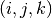 are used which correspond
to directions
, it is volume-averaged. When describing a
specific cell in the geometry, indices 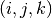 are used which correspond
to directions  . In most cases, the same operation is performed in
all three directions. To compactly write this, an arbitrary direction set
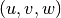 that corresponds to cell indices 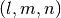 is used. Note
that
. In most cases, the same operation is performed in
all three directions. To compactly write this, an arbitrary direction set
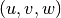 that corresponds to cell indices 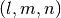 is used. Note
that  and
and  do not have to correspond to
do not have to correspond to  and
and
 . However, if and correspond to
. However, if and correspond to  and
and
 ,
,  and
and  correspond to and
correspond to and  directions. An example of this is shown in the following expression:
directions. An example of this is shown in the following expression:
(1)
Here, takes on each direction one at a time. The parameter  is surface area-averaged over the transverse indices
is surface area-averaged over the transverse indices  and
and  located at
located at  . Usually, spatial indices are listed as subscripts and
the direction as a superscript. Energy group indices represented by
. Usually, spatial indices are listed as subscripts and
the direction as a superscript. Energy group indices represented by  and
and  are also listed as superscripts here. The group is the
group of interest and, if present, is all groups. Finally, any
parameter surrounded by
are also listed as superscripts here. The group is the
group of interest and, if present, is all groups. Finally, any
parameter surrounded by  represents a
tally quantity that can be edited from a Monte Carlo (MC) solution.
represents a
tally quantity that can be edited from a Monte Carlo (MC) solution.
9.2. Theory¶
NDA is a diffusion model that has equivalent physics to a transport model. There
are many different methods that can be classified as NDA. The CMFD method is a
type of NDA that represents second order multigroup diffusion equations on a
coarse spatial mesh. Whether a transport model or diffusion model is used to
represent the distribution of neutrons, these models must satisfy the neutron
balance equation. This balance is represented by the following formula for a
specific energy group in cell :
(2)![\sum\limits_{u\in(x,y,z)}\left(\left\langle\overline{J}^{u,g}_{l+1/2,m,n}
\Delta_m^v\Delta_n^w\right\rangle -
\left\langle\overline{J}^{u,g}_{l-1/2,m,n}
\Delta_m^v\Delta_n^w\right\rangle\right)
+
\left\langle\overline{\overline\Sigma}_{t_{l,m,n}}^g
\overline{\overline\phi}_{l,m,n}^g\Delta_l^u\Delta_m^v\Delta_n^w\right\rangle
= \\
\sum\limits_{h=1}^G\left\langle
\overline{\overline{\nu_s\Sigma}}_{s_{l,m,n}}^{h\rightarrow
g}\overline{\overline\phi}_{l,m,n}^h\Delta_l^u\Delta_m^v\Delta_n^w
\right\rangle
+
\frac{1}{k_{eff}}\sum\limits_{h=1}^G
\left\langle\overline{\overline{\nu_f\Sigma}}_{f_{l,m,n}}^{h\rightarrow
g}\overline{\overline\phi}_{l,m,n}^h
\Delta_l^u\Delta_m^v\Delta_n^w\right\rangle.](../_images/math/f0f5a4134ebfd33058961a2d086a23005a578f35.png)
In eq. (2) the parameters are defined as:
 — surface area-integrated net
current over surface
— surface area-integrated net
current over surface  with surface normal in direction
in energy group . By dividing this quantity by the transverse
area, 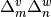, the surface area-averaged net current can
be computed.
with surface normal in direction
in energy group . By dividing this quantity by the transverse
area, 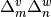, the surface area-averaged net current can
be computed. — volume-integrated total reaction rate over energy group .
— volume-integrated total reaction rate over energy group . — volume-integrated scattering production rate of neutrons that begin with
energy in group and exit reaction in group . This reaction
rate also includes the energy transfer of reactions (except fission) that
produce multiple neutrons such as (n, 2n); hence, the need for
— volume-integrated scattering production rate of neutrons that begin with
energy in group and exit reaction in group . This reaction
rate also includes the energy transfer of reactions (except fission) that
produce multiple neutrons such as (n, 2n); hence, the need for  to represent neutron multiplicity.
to represent neutron multiplicity. — core multiplication factor.
— core multiplication factor. — volume-integrated fission production rate of neutrons from fissions in
group that exit in group .
— volume-integrated fission production rate of neutrons from fissions in
group that exit in group .
Each quantity in represents a scalar value that
is obtained from an MC tally. A good verification step when using an MC code is
to make sure that tallies satisfy this balance equation within statistics. No
NDA acceleration can be performed if the balance equation is not satisfied.
There are three major steps to consider when performing NDA: (1) calculation of macroscopic cross sections and nonlinear parameters, (2) solving an eigenvalue problem with a system of linear equations, and (3) modifying MC source distribution to align with the NDA solution on a chosen mesh. This process is illustrated as a flow chart below. After a batch of neutrons is simulated, NDA can take place. Each of the steps described above is described in detail in the following sections.
![\begin{tikzpicture}
\matrix[every node/.style={draw, thick, minimum width=3cm, minimum height=1cm, align=center}, column sep=2cm, row sep=1cm] (m) {
\node[draw, fill=red!40] (start) {Batch $i$ \\ tally NDA}; & \\
\node[draw, diamond, aspect=2, fill=green!40] (cmfd) {Run NDA?}; & \node[draw, fill=red!40] (end) {Batch $i + 1$ \\ tally NDA}; \\
\node[draw, fill=blue!40] (xs) {Calculate XS \& DC}; & \node[draw, fill=blue!40] (modify) {Modify MC Source}; \\
\node[draw, fill=blue!40] (nonlinear) {Calculate Equivalence}; & \node[draw, fill=blue!40] (eqs) {Solve NDA eqs.};\\
};
\begin{scope}[every path/.style={->,very thick,draw}]
\draw (start.south) -- (cmfd.north);
\draw (cmfd.east) -- node[above] {no} (end.west);
\draw (cmfd.south) -- node[right] {yes} (xs.north);
\draw (xs.south) -- (nonlinear.north);
\draw (nonlinear.east) -- (eqs.west);
\draw (eqs.north) -- (modify.south);
\draw (modify.north) -- (end.south);
\end{scope}
\end{tikzpicture}](../_images/tikz-2415a321261cca6307913eacc8e1d6b53ce536bf.png)
Flow chart of NDA process. Note "XS" is used for cross section and "DC" is used for diffusion coefficient.
9.2.1. Calculation of Macroscopic Cross Sections¶
A diffusion model needs macroscopic cross sections and diffusion coefficients to solve for multigroup fluxes. Cross sections are derived by conserving reaction rates predicted by MC tallies. From Eq. (2), total, scattering production and fission production macroscopic cross sections are needed. They are defined from MC tallies as follows:
(3)
(4)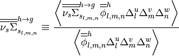
and
(5)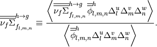
In order to fully conserve neutron balance, leakage rates also need to be preserved. In standard diffusion theory, leakage rates are represented by diffusion coefficients. Unfortunately, it is not easy in MC to calculate a single diffusion coefficient for a cell that describes leakage out of each surface. Luckily, it does not matter what definition of diffusion coefficient is used because nonlinear equivalence parameters will correct for this inconsistency. However, depending on the diffusion coefficient definition chosen, different convergence properties of NDA equations are observed. Here, we introduce a diffusion coefficient that is derived for a coarse energy transport reaction rate. This definition can easily be constructed from MC tallies provided that angular moments of scattering reaction rates can be obtained. The diffusion coefficient is defined as follows:
(6)
where
(7)
Note that the transport reaction rate is calculated from the total reaction rate
reduced by the  scattering production reaction rate. Equation (6)
does not represent the best definition of diffusion coefficients from MC;
however, it is very simple and usually fits into MC tally frameworks
easily. Different methods to calculate more accurate diffusion coefficients can
found in [Herman].
scattering production reaction rate. Equation (6)
does not represent the best definition of diffusion coefficients from MC;
however, it is very simple and usually fits into MC tally frameworks
easily. Different methods to calculate more accurate diffusion coefficients can
found in [Herman].
9.2.2. CMFD Equations¶
The first part of this section is devoted to discussing second-order finite volume discretization of multigroup diffusion equations. This will be followed up by the formulation of CMFD equations that are used in this NDA scheme. When performing second-order finite volume discretization of the diffusion equation, we need information that relates current to flux. In this numerical scheme, each cell is coupled only to its direct neighbors. Therefore, only two types of coupling exist: (1) cell-to-cell coupling and (2) cell-to-boundary coupling. The derivation of this procedure is referred to as finite difference diffusion equations and can be found in literature such as [Hebert]. These current/flux relationships are as follows:
- cell-to-cell coupling
(8)
- cell-to-boundary coupling
(9)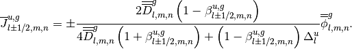
In Eqs. (8) and (9), the  refers to
left () or right (
refers to
left () or right ( ) surface in the direction,
back (
) surface in the direction,
back ( ) or front (
) or front ( ) surface in the direction and
bottom (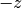) or top (
) surface in the direction and
bottom (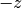) or top ( ) surface in the direction. For
cell-to-boundary coupling, a general albedo,
) surface in the direction. For
cell-to-boundary coupling, a general albedo,  ,
is used. The albedo is defined as the ratio of incoming (
,
is used. The albedo is defined as the ratio of incoming ( superscript)
to outgoing (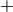 superscript) partial current on any surface represented
as
superscript)
to outgoing (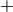 superscript) partial current on any surface represented
as
(10)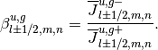
Common boundary conditions are: vacuum ( ), reflective
(
), reflective
( ) and zero flux (
) and zero flux ( ). Both eq. (8)
and eq. (9) can be written in this generic form,
). Both eq. (8)
and eq. (9) can be written in this generic form,
(11)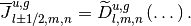
The parameter  represents the linear
coupling term between current and flux. These current relationships can be
sustituted into eq. (2) to produce a linear system of multigroup
diffusion equations for each spatial cell and energy group. However, a solution
to these equations is not consistent with a higher order transport solution
unless equivalence factors are present. This is because both the diffusion
approximation, governed by Fick’s Law, and spatial trunction error will produce
differences. Therefore, a nonlinear parameter,
represents the linear
coupling term between current and flux. These current relationships can be
sustituted into eq. (2) to produce a linear system of multigroup
diffusion equations for each spatial cell and energy group. However, a solution
to these equations is not consistent with a higher order transport solution
unless equivalence factors are present. This is because both the diffusion
approximation, governed by Fick’s Law, and spatial trunction error will produce
differences. Therefore, a nonlinear parameter,
 , is added to eqs. (8) and
(9). These equations are, respectively,
, is added to eqs. (8) and
(9). These equations are, respectively,
(12)
and
(13)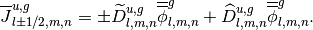
The only unknown in each of these equations is the equivalence parameter. The current, linear coupling term and flux can either be obtained or derived from MC tallies. Thus, it is called nonlinear because it is dependent on the flux which is updated on the next iteration.
Equations (12) and (13) can be substituted into eq. (2) to create a linear system of equations that is consistent with transport physics. One example of this equation is written for an interior cell,
(14)![\sum_{u\in
x,y,x}\frac{1}{\Delta_l^u}\left[\left(-\tilde{D}_{l-1/2,m,n}^{u,g} -
\hat{D}_{l-1/2,m,n}^{u,g}\right)\overline{\overline{\phi}}_{l-1,m,n}^g\right.
+ \left(\tilde{D}_{l-1/2,m,n}^{u,g} +
\tilde{D}_{l+1/2,m,n}^{u,g} - \hat{D}_{l-1/2,m,n}^{u,g} +
\hat{D}_{l+1/2,m,n}^{u,g}\right)\overline{\overline{\phi}}_{l,m,n}^g
\\ +
\left. \left(-\tilde{D}_{l+1/2,m,n}^{u,g} +
\hat{D}_{l+1/2,m,n}^{u,g}\right)\overline{\overline{\phi}}_{l+1,m,n}^g
\right] +
\overline{\overline\Sigma}_{t_{l,m,n}}^g\overline{\overline{\phi}}_{l,m,n}^g
- \sum\limits_{h=1}^G\overline{\overline{\nu_s\Sigma}}^{h\rightarrow
g}_{s_{l,m,n}}\overline{\overline{\phi}}_{l,m,n}^h =
\frac{1}{k}\sum\limits_{h=1}^G\overline{\overline{\nu_f\Sigma}}^{h\rightarrow
g}_{f_{l,m,n}}\overline{\overline{\phi}}_{l,m,n}^h.](../_images/math/49d4475e4ce6612d284b21992ac713097dce851f.png)
It should be noted that before substitution, eq. (2) was divided by the volume of the cell, 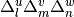. Equation (14) can be represented in operator form as
(15)
where  is the neutron loss matrix operator,
is the neutron production matrix operator,
is the neutron loss matrix operator,
is the neutron production matrix operator,
 is the multigroup flux vector and
is the multigroup flux vector and  is the
eigenvalue. This generalized eigenvalue problem is solved to obtain fundamental
mode multigroup fluxes and eigenvalue. In order to produce consistent results
with transport theory from these equations, the neutron balance equation must
have been satisfied by MC tallies. The desire is that CMFD equations will
produce a more accurate source than MC after each fission source generation.
is the
eigenvalue. This generalized eigenvalue problem is solved to obtain fundamental
mode multigroup fluxes and eigenvalue. In order to produce consistent results
with transport theory from these equations, the neutron balance equation must
have been satisfied by MC tallies. The desire is that CMFD equations will
produce a more accurate source than MC after each fission source generation.
9.2.3. CMFD Feedback¶
Now that a more accurate representation of the expected source distribution is estimated from CMFD, it needs to be communicated back to MC. The first step in this process is to generate a probability mass function that provides information about how probable it is for a neutron to be born in a given cell and energy group. This is represented as
(16)
This equation can be multiplied by the number of source neutrons to obtain an estimate of the expected number of neutrons to be born in a given cell and energy group. This distribution can be compared to the MC source distribution to generate weight adjusted factors defined as
(17)
The MC source distribution is represented on the same coarse mesh as
CMFD by summing all neutrons’ weights,  , in a given cell and
energy group. MC source weights can then be modified by this weight
adjustment factor so that it matches the CMFD solution on the coarse
mesh,
, in a given cell and
energy group. MC source weights can then be modified by this weight
adjustment factor so that it matches the CMFD solution on the coarse
mesh,
(18)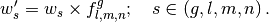
It should be noted that heterogeneous information about local coordinates and energy remain constant throughout this modification process.
9.3. Implementation in OpenMC¶
The section describes how CMFD was implemented in OpenMC. Before the simulation begins, a user sets up a CMFD input file that contains the following basic information:
- CMFD mesh (space and energy),
- boundary conditions at edge of mesh (albedos),
- acceleration region (subset of mesh, optional),
- fission source generation (FSG)/batch that CMFD should begin, and
- whether CMFD feedback should be applied.
It should be noted that for more difficult simulations (e.g., light water reactors), there are other options available to users such as tally resetting parameters, effective down-scatter usage, tally estimator, etc. For more information please see CMFD Specification – cmfd.xml.
Of the options described above, the optional acceleration subset region is an uncommon feature. Because OpenMC only has a structured Cartesian mesh, mesh cells may overlay regions that don’t contain fissionable material and may be so far from the core that the neutron flux is very low. If these regions were included in the CMFD solution, bad estimates of diffusion parameters may result and affect CMFD feedback. To deal with this, a user can carve out an active acceleration region from their structured Cartesian mesh. This is illustrated in diagram below. When placing a CMFD mesh over a geometry, the boundary conditions must be known at the global edges of the mesh. If the geometry is complex like the one below, one may have to cover the whole geometry including the reactor pressure vessel because we know that there is a zero incoming current boundary condition at the outer edge of the pressure vessel. This is not viable in practice because neutrons in simulations may not reach mesh cells that are near the pressure vessel. To circumvent this, one can shrink the mesh to cover just the core region as shown in the diagram. However, one must still estimate the boundary conditions at the global boundaries, but at these locations, they are not readily known. In OpenMC, one can carve out the active core region from the entire structured Cartesian mesh. This is shown in the diagram below by the darkened region over the core. The albedo boundary conditions at the active core/reflector boundary can be tallied indirectly during the MC simulation with incoming and outgoing partial currents. This allows the user to not have to worry about neutrons producing adequate tallies in mesh cells far away from the core.
![% these dimensions are determined in arrow_dimms.ods
\def\scale{1.0}
\def\latWidth{0.2808363589*\scale}
\def\RPVOR{3*\scale}
\def\rectW{0.75*\scale}
\def\RPVIR{2.8694005485*\scale}
\def\BarrelIR{2.4547472901*\scale}
\def\BarrelOR{2.5293848766*\scale}
\def\ShieldOR{2.6040224631*\scale}
\def\bafCIRx{0.9829272561*\scale}
\def\bafCIRy{2.1062726917*\scale}
\def\bafCORx{1.0119529842*\scale}
\def\bafCORy{2.1352984197*\scale}
\def\bafMIRx{1.8254363328*\scale}
\def\bafMIRy{1.5445999739*\scale}
\def\bafMORx{1.8544620609*\scale}
\def\bafMORy{1.573625702*\scale}
\tikzset{Assembly/.style={
inner sep=0pt,
text width=\latWidth in,
minimum size=\latWidth in,
draw=black,
align=center
}
}
\def\tkzRPV{(0,0) circle (\RPVIR) (0,0) circle (\RPVOR)}
\def\tkzBarrel{(0,0) circle (\BarrelIR) (0,0) circle (\BarrelOR)}
\def\tkzShields{(0,0) circle (\BarrelOR) (0,0) circle (\ShieldOR)}
\def\tkzBaffCOR{(-\bafCORx, -\bafCORy) rectangle (\bafCORx, \bafCORy)}
\def\tkzBaffCIR{(-\bafCIRx, -\bafCIRy) rectangle (\bafCIRx, \bafCIRy)}
\def\tkzBaffMOR{(-\bafMORx, -\bafMORy) rectangle (\bafMORx, \bafMORy)}
\def\tkzBaffMIR{(-\bafMIRx, -\bafMIRy) rectangle (\bafMIRx, \bafMIRy) }
\def\tkzBaffleC{ \tkzBaffCIR \tkzBaffCOR }
\def\tkzBaffleM{ \tkzBaffMIR \tkzBaffMOR }
\def\tkzBaffCClip{\tkzBaffCIR (-\RPVOR, -\RPVOR) rectangle (\RPVOR, \RPVOR)}
\def\tkzBaffMClip{\tkzBaffMIR (-\RPVOR, -\RPVOR) rectangle (\RPVOR, \RPVOR)}
\def\highenr{blue!50}
\def\midenr{yellow!50}
\def\lowenr{red!50}
\def\lightgray{black!25}
\def\darkgray{black!80}
\begin{tikzpicture}[x=1in,y=1in, xshift=3in]
\scalebox{0.6}{
% draw RPV, barrel, and shield panels
\path[fill=black,even odd rule] \tkzRPV;
\path[fill=black,even odd rule] \tkzBarrel;
\begin{scope}
\clip[rotate around={45:(0,0)}] (-\RPVOR, -\rectW) rectangle (\RPVOR, \rectW) (-\rectW, \RPVOR) rectangle (\rectW, -\RPVOR);
\path[fill=black,even odd rule] \tkzShields;
\end{scope}
% draw assembly row/column headers
\draw[red, thick] ($(-7*\latWidth,\RPVOR/\latWidth*\latWidth)$) node[above, anchor=south] {R} -- ($(-7*\latWidth,4*\latWidth)$);
\draw[red, thick] ($(-6*\latWidth,\RPVOR/\latWidth*\latWidth)$) node[above, anchor=south] {P} -- ($(-6*\latWidth,6*\latWidth)$);
\draw[red, thick] ($(-5*\latWidth,\RPVOR/\latWidth*\latWidth)$) node[above, anchor=south] {N} -- ($(-5*\latWidth,7*\latWidth)$);
\draw[red, thick] ($(-4*\latWidth,\RPVOR/\latWidth*\latWidth)$) node[above, anchor=south] {M} -- ($(-4*\latWidth,7*\latWidth)$);
\draw[red, thick] ($(-3*\latWidth,\RPVOR/\latWidth*\latWidth)$) node[above, anchor=south] {L} -- ($(-3*\latWidth,8*\latWidth)$);
\draw[red, thick] ($(-2*\latWidth,\RPVOR/\latWidth*\latWidth)$) node[above, anchor=south] {K} -- ($(-2*\latWidth,8*\latWidth)$);
\draw[red, thick] ($(-1*\latWidth,\RPVOR/\latWidth*\latWidth)$) node[above, anchor=south] {J} -- ($(-1*\latWidth,8*\latWidth)$);
\draw[red, thick] ($(-0*\latWidth,\RPVOR/\latWidth*\latWidth)$) node[above, anchor=south] {H} -- ($(-0*\latWidth,8*\latWidth)$);
\draw[red, thick] ($(1*\latWidth,\RPVOR/\latWidth*\latWidth)$) node[above, anchor=south] {G} -- ($(1*\latWidth,8*\latWidth)$);
\draw[red, thick] ($(2*\latWidth,\RPVOR/\latWidth*\latWidth)$) node[above, anchor=south] {F} -- ($(2*\latWidth,8*\latWidth)$);
\draw[red, thick] ($(3*\latWidth,\RPVOR/\latWidth*\latWidth)$) node[above, anchor=south] {E} -- ($(3*\latWidth,8*\latWidth)$);
\draw[red, thick] ($(4*\latWidth,\RPVOR/\latWidth*\latWidth)$) node[above, anchor=south] {D} -- ($(4*\latWidth,7*\latWidth)$);
\draw[red, thick] ($(5*\latWidth,\RPVOR/\latWidth*\latWidth)$) node[above, anchor=south] {C} -- ($(5*\latWidth,7*\latWidth)$);
\draw[red, thick] ($(6*\latWidth,\RPVOR/\latWidth*\latWidth)$) node[above, anchor=south] {B} -- ($(6*\latWidth,6*\latWidth)$);
\draw[red, thick] ($(7*\latWidth,\RPVOR/\latWidth*\latWidth)$) node[above, anchor=south] {A} -- ($(7*\latWidth,4*\latWidth)$);
\begin{scope}[rotate=90]
\draw[red, thick] ($(-7*\latWidth,\RPVOR/\latWidth*\latWidth)$) node[left, anchor=east] {15} -- ($(-7*\latWidth,4*\latWidth)$);
\draw[red, thick] ($(-6*\latWidth,\RPVOR/\latWidth*\latWidth)$) node[left, anchor=east] {14} -- ($(-6*\latWidth,6*\latWidth)$);
\draw[red, thick] ($(-5*\latWidth,\RPVOR/\latWidth*\latWidth)$) node[left, anchor=east] {13} -- ($(-5*\latWidth,7*\latWidth)$);
\draw[red, thick] ($(-4*\latWidth,\RPVOR/\latWidth*\latWidth)$) node[left, anchor=east] {12} -- ($(-4*\latWidth,7*\latWidth)$);
\draw[red, thick] ($(-3*\latWidth,\RPVOR/\latWidth*\latWidth)$) node[left, anchor=east] {11} -- ($(-3*\latWidth,8*\latWidth)$);
\draw[red, thick] ($(-2*\latWidth,\RPVOR/\latWidth*\latWidth)$) node[left, anchor=east] {10} -- ($(-2*\latWidth,8*\latWidth)$);
\draw[red, thick] ($(-1*\latWidth,\RPVOR/\latWidth*\latWidth)$) node[left, anchor=east] {9} -- ($(-1*\latWidth,8*\latWidth)$);
\draw[red, thick] ($(-0*\latWidth,\RPVOR/\latWidth*\latWidth)$) node[left, anchor=east] {8} -- ($(-0*\latWidth,8*\latWidth)$);
\draw[red, thick] ($(1*\latWidth,\RPVOR/\latWidth*\latWidth)$) node[left, anchor=east] {7} -- ($(1*\latWidth,8*\latWidth)$);
\draw[red, thick] ($(2*\latWidth,\RPVOR/\latWidth*\latWidth)$) node[left, anchor=east] {6} -- ($(2*\latWidth,8*\latWidth)$);
\draw[red, thick] ($(3*\latWidth,\RPVOR/\latWidth*\latWidth)$) node[left, anchor=east] {5} -- ($(3*\latWidth,8*\latWidth)$);
\draw[red, thick] ($(4*\latWidth,\RPVOR/\latWidth*\latWidth)$) node[left, anchor=east] {4} -- ($(4*\latWidth,7*\latWidth)$);
\draw[red, thick] ($(5*\latWidth,\RPVOR/\latWidth*\latWidth)$) node[left, anchor=east] {3} -- ($(5*\latWidth,7*\latWidth)$);
\draw[red, thick] ($(6*\latWidth,\RPVOR/\latWidth*\latWidth)$) node[left, anchor=east] {2} -- ($(6*\latWidth,6*\latWidth)$);
\draw[red, thick] ($(7*\latWidth,\RPVOR/\latWidth*\latWidth)$) node[left, anchor=east] {1} -- ($(7*\latWidth,4*\latWidth)$);
\end{scope}
% draw fuel assembly nodes
\node [Assembly, fill=\lightgray, opacity=0.3] at ($(-8*\latWidth,8*\latWidth)$) {};
\node [Assembly, fill=\lightgray, opacity=0.3] at ($(-7*\latWidth,8*\latWidth)$) {};
\node [Assembly, fill=\lightgray, opacity=0.3] at ($(-6*\latWidth,8*\latWidth)$) {};
\node [Assembly, fill=\lightgray, opacity=0.3] at ($(-5*\latWidth,8*\latWidth)$) {};
\node [Assembly, fill=\lightgray, opacity=0.3] at ($(-4*\latWidth,8*\latWidth)$) {};
\node [Assembly, fill=\lightgray, opacity=0.3] at ($(-3*\latWidth,8*\latWidth)$) {};
\node [Assembly, fill=\lightgray, opacity=0.3] at ($(-2*\latWidth,8*\latWidth)$) {};
\node [Assembly, fill=\lightgray, opacity=0.3] at ($(-1*\latWidth,8*\latWidth)$) {};
\node [Assembly, fill=\lightgray, opacity=0.3] at ($(-0*\latWidth,8*\latWidth)$) {};
\node [Assembly, fill=\lightgray, opacity=0.3] at ($( 1*\latWidth,8*\latWidth)$) {};
\node [Assembly, fill=\lightgray, opacity=0.3] at ($( 2*\latWidth,8*\latWidth)$) {};
\node [Assembly, fill=\lightgray, opacity=0.3] at ($( 3*\latWidth,8*\latWidth)$) {};
\node [Assembly, fill=\lightgray, opacity=0.3] at ($( 4*\latWidth,8*\latWidth)$) {};
\node [Assembly, fill=\lightgray, opacity=0.3] at ($( 5*\latWidth,8*\latWidth)$) {};
\node [Assembly, fill=\lightgray, opacity=0.3] at ($( 6*\latWidth,8*\latWidth)$) {};
\node [Assembly, fill=\lightgray, opacity=0.3] at ($( 7*\latWidth,8*\latWidth)$) {};
\node [Assembly, fill=\lightgray, opacity=0.3] at ($( 8*\latWidth,8*\latWidth)$) {};
\node [Assembly, fill=\lightgray, opacity=0.3] at ($(-8*\latWidth,7*\latWidth)$) {};
\node [Assembly, fill=\lightgray, opacity=0.3] at ($(-7*\latWidth,7*\latWidth)$) {};
\node [Assembly, fill=\lightgray, opacity=0.3] at ($(-6*\latWidth,7*\latWidth)$) {};
\node [Assembly, fill=\lightgray, opacity=0.3] at ($(-5*\latWidth,7*\latWidth)$) {};
\node [Assembly, fill=\lightgray, opacity=0.3] at ($(-4*\latWidth,7*\latWidth)$) {};
\node [Assembly, fill=\highenr] at ($(-3*\latWidth,7*\latWidth)$) {}; % L1
\node [Assembly, fill=\darkgray, opacity=0.7] at ($(-3*\latWidth,7*\latWidth)$) {};
\node [Assembly, fill=\highenr] at ($(-2*\latWidth,7*\latWidth)$) {6}; % K1
\node [Assembly, fill=\darkgray, opacity=0.7] at ($(-2*\latWidth,7*\latWidth)$) {};
\node [Assembly, fill=\highenr] at ($(-1*\latWidth,7*\latWidth)$) {}; % J1
\node [Assembly, fill=\darkgray, opacity=0.7] at ($(-1*\latWidth,7*\latWidth)$) {};
\node [Assembly, fill=\highenr] at ($(-0*\latWidth,7*\latWidth)$) {6}; % H1
\node [Assembly, fill=\darkgray, opacity=0.7] at ($(-0*\latWidth,7*\latWidth)$) {};
\node [Assembly, fill=\highenr] at ($( 1*\latWidth,7*\latWidth)$) {}; % G1
\node [Assembly, fill=\darkgray, opacity=0.7] at ($( 1*\latWidth,7*\latWidth)$) {};
\node [Assembly, fill=\highenr] at ($( 2*\latWidth,7*\latWidth)$) {6}; % F1
\node [Assembly, fill=\darkgray, opacity=0.7] at ($( 2*\latWidth,7*\latWidth)$) {};
\node [Assembly, fill=\highenr] at ($( 3*\latWidth,7*\latWidth)$) {}; % E1
\node [Assembly, fill=\darkgray, opacity=0.7] at ($( 3*\latWidth,7*\latWidth)$) {};
\node [Assembly, fill=\lightgray, opacity=0.3] at ($( 4*\latWidth,7*\latWidth)$) {};
\node [Assembly, fill=\lightgray, opacity=0.3] at ($( 5*\latWidth,7*\latWidth)$) {};
\node [Assembly, fill=\lightgray, opacity=0.3] at ($( 6*\latWidth,7*\latWidth)$) {};
\node [Assembly, fill=\lightgray, opacity=0.3] at ($( 7*\latWidth,7*\latWidth)$) {};
\node [Assembly, fill=\lightgray, opacity=0.3] at ($( 8*\latWidth,7*\latWidth)$) {};
\node [Assembly, fill=\lightgray, opacity=0.3] at ($(-8*\latWidth,6*\latWidth)$) {};
\node [Assembly, fill=\lightgray, opacity=0.3] at ($(-7*\latWidth,6*\latWidth)$) {};
\node [Assembly, fill=\lightgray, opacity=0.3] at ($(-6*\latWidth,6*\latWidth)$) {};
\node [Assembly, fill=\highenr] at ($(-5*\latWidth,6*\latWidth)$) {}; % N2
\node [Assembly, fill=\darkgray, opacity=0.7] at ($(-5*\latWidth,6*\latWidth)$) {};
\node [Assembly, fill=\highenr] at ($(-4*\latWidth,6*\latWidth)$) {}; % M2
\node [Assembly, fill=\darkgray, opacity=0.7] at ($(-4*\latWidth,6*\latWidth)$) {};
\node [Assembly, fill=\highenr] at ($(-3*\latWidth,6*\latWidth)$) {16}; % L2
\node [Assembly, fill=\darkgray, opacity=0.7] at ($(-3*\latWidth,6*\latWidth)$) {};
\node [Assembly, fill=\lowenr] at ($(-2*\latWidth,6*\latWidth)$) {}; % K2
\node [Assembly, fill=\darkgray, opacity=0.7] at ($(-2*\latWidth,6*\latWidth)$) {};
\node [Assembly, fill=\highenr] at ($(-1*\latWidth,6*\latWidth)$) {20}; % J2
\node [Assembly, fill=\darkgray, opacity=0.7] at ($(-1*\latWidth,6*\latWidth)$) {};
\node [Assembly, fill=\lowenr] at ($(-0*\latWidth,6*\latWidth)$) {}; % H2
\node [Assembly, fill=\darkgray, opacity=0.7] at ($(-0*\latWidth,6*\latWidth)$) {};
\node [Assembly, fill=\highenr] at ($( 1*\latWidth,6*\latWidth)$) {20}; % G2
\node [Assembly, fill=\darkgray, opacity=0.7] at ($( 1*\latWidth,6*\latWidth)$) {};
\node [Assembly, fill=\lowenr] at ($( 2*\latWidth,6*\latWidth)$) {}; % F2
\node [Assembly, fill=\darkgray, opacity=0.7] at ($( 2*\latWidth,6*\latWidth)$) {};
\node [Assembly, fill=\highenr] at ($( 3*\latWidth,6*\latWidth)$) {16}; % E2
\node [Assembly, fill=\darkgray, opacity=0.7] at ($( 3*\latWidth,6*\latWidth)$) {};
\node [Assembly, fill=\highenr] at ($( 4*\latWidth,6*\latWidth)$) {}; % D2
\node [Assembly, fill=\darkgray, opacity=0.7] at ($( 4*\latWidth,6*\latWidth)$) {};
\node [Assembly, fill=\highenr] at ($( 5*\latWidth,6*\latWidth)$) {}; % C2
\node [Assembly, fill=\darkgray, opacity=0.7] at ($( 5*\latWidth,6*\latWidth)$) {};
\node [Assembly, fill=\lightgray, opacity=0.3] at ($( 6*\latWidth,6*\latWidth)$) {};
\node [Assembly, fill=\lightgray, opacity=0.3] at ($( 7*\latWidth,6*\latWidth)$) {};
\node [Assembly, fill=\lightgray, opacity=0.3] at ($( 8*\latWidth,6*\latWidth)$) {};
\node [Assembly, fill=\lightgray, opacity=0.3] at ($(-8*\latWidth,5*\latWidth)$) {};
\node [Assembly, fill=\lightgray, opacity=0.3] at ($(-7*\latWidth,5*\latWidth)$) {};
\node [Assembly, fill=\highenr] at ($(-6*\latWidth,5*\latWidth)$) {}; % P3
\node [Assembly, fill=\darkgray, opacity=0.7] at ($(-6*\latWidth,5*\latWidth)$) {};
\node [Assembly, fill=\highenr] at ($(-5*\latWidth,5*\latWidth)$) {15}; % N3
\node [Assembly, fill=\darkgray, opacity=0.7] at ($(-5*\latWidth,5*\latWidth)$) {};
\node [Assembly, fill=\midenr] at ($(-4*\latWidth,5*\latWidth)$) {16}; % M3
\node [Assembly, fill=\darkgray, opacity=0.7] at ($(-4*\latWidth,5*\latWidth)$) {};
\node [Assembly, fill=\lowenr] at ($(-3*\latWidth,5*\latWidth)$) {}; % L3
\node [Assembly, fill=\darkgray, opacity=0.7] at ($(-3*\latWidth,5*\latWidth)$) {};
\node [Assembly, fill=\midenr] at ($(-2*\latWidth,5*\latWidth)$) {16}; % K3
\node [Assembly, fill=\darkgray, opacity=0.7] at ($(-2*\latWidth,5*\latWidth)$) {};
\node [Assembly, fill=\lowenr] at ($(-1*\latWidth,5*\latWidth)$) {}; % J3
\node [Assembly, fill=\darkgray, opacity=0.7] at ($(-1*\latWidth,5*\latWidth)$) {};
\node [Assembly, fill=\midenr] at ($(-0*\latWidth,5*\latWidth)$) {16}; % H3
\node [Assembly, fill=\darkgray, opacity=0.7] at ($(-0*\latWidth,5*\latWidth)$) {};
\node [Assembly, fill=\lowenr] at ($( 1*\latWidth,5*\latWidth)$) {}; % G3
\node [Assembly, fill=\darkgray, opacity=0.7] at ($( 1*\latWidth,5*\latWidth)$) {};
\node [Assembly, fill=\midenr] at ($( 2*\latWidth,5*\latWidth)$) {16}; % F3
\node [Assembly, fill=\darkgray, opacity=0.7] at ($( 2*\latWidth,5*\latWidth)$) {};
\node [Assembly, fill=\lowenr] at ($( 3*\latWidth,5*\latWidth)$) {}; % E3
\node [Assembly, fill=\darkgray, opacity=0.7] at ($( 3*\latWidth,5*\latWidth)$) {};
\node [Assembly, fill=\midenr] at ($( 4*\latWidth,5*\latWidth)$) {16}; % D3
\node [Assembly, fill=\darkgray, opacity=0.7] at ($( 4*\latWidth,5*\latWidth)$) {};
\node [Assembly, fill=\highenr] at ($( 5*\latWidth,5*\latWidth)$) {15}; % C3
\node [Assembly, fill=\darkgray, opacity=0.7] at ($( 5*\latWidth,5*\latWidth)$) {};
\node [Assembly, fill=\highenr] at ($( 6*\latWidth,5*\latWidth)$) {}; % B3
\node [Assembly, fill=\darkgray, opacity=0.7] at ($( 6*\latWidth,5*\latWidth)$) {};
\node [Assembly, fill=\lightgray, opacity=0.3] at ($( 7*\latWidth,5*\latWidth)$) {};
\node [Assembly, fill=\lightgray, opacity=0.3] at ($( 8*\latWidth,5*\latWidth)$) {};
\node [Assembly, fill=\lightgray, opacity=0.3] at ($(-8*\latWidth,4*\latWidth)$) {};
\node [Assembly, fill=\lightgray, opacity=0.3] at ($(-7*\latWidth,4*\latWidth)$) {};
\node [Assembly, fill=\highenr] at ($(-6*\latWidth,4*\latWidth)$) {}; % P4
\node [Assembly, fill=\darkgray, opacity=0.7] at ($(-6*\latWidth,4*\latWidth)$) {};
\node [Assembly, fill=\midenr] at ($(-5*\latWidth,4*\latWidth)$) {16}; % N4
\node [Assembly, fill=\darkgray, opacity=0.7] at ($(-5*\latWidth,4*\latWidth)$) {};
\node [Assembly, fill=\midenr] at ($(-4*\latWidth,4*\latWidth)$) {}; % M4
\node [Assembly, fill=\darkgray, opacity=0.7] at ($(-4*\latWidth,4*\latWidth)$) {};
\node [Assembly, fill=\midenr] at ($(-3*\latWidth,4*\latWidth)$) {16}; % L4
\node [Assembly, fill=\darkgray, opacity=0.7] at ($(-3*\latWidth,4*\latWidth)$) {};
\node [Assembly, fill=\lowenr] at ($(-2*\latWidth,4*\latWidth)$) {}; % K4
\node [Assembly, fill=\darkgray, opacity=0.7] at ($(-2*\latWidth,4*\latWidth)$) {};
\node [Assembly, fill=\midenr] at ($(-1*\latWidth,4*\latWidth)$) {12}; % J4
\node [Assembly, fill=\darkgray, opacity=0.7] at ($(-1*\latWidth,4*\latWidth)$) {};
\node [Assembly, fill=\lowenr] at ($(-0*\latWidth,4*\latWidth)$) {}; % H4
\node [Assembly, fill=\darkgray, opacity=0.7] at ($(-0*\latWidth,4*\latWidth)$) {};
\node [Assembly, fill=\midenr] at ($( 1*\latWidth,4*\latWidth)$) {12}; % G4
\node [Assembly, fill=\darkgray, opacity=0.7] at ($( 1*\latWidth,4*\latWidth)$) {};
\node [Assembly, fill=\lowenr] at ($( 2*\latWidth,4*\latWidth)$) {}; % F4
\node [Assembly, fill=\darkgray, opacity=0.7] at ($( 2*\latWidth,4*\latWidth)$) {};
\node [Assembly, fill=\midenr] at ($( 3*\latWidth,4*\latWidth)$) {16}; % E4
\node [Assembly, fill=\darkgray, opacity=0.7] at ($( 3*\latWidth,4*\latWidth)$) {};
\node [Assembly, fill=\midenr] at ($( 4*\latWidth,4*\latWidth)$) {}; % D4
\node [Assembly, fill=\darkgray, opacity=0.7] at ($( 4*\latWidth,4*\latWidth)$) {};
\node [Assembly, fill=\midenr] at ($( 5*\latWidth,4*\latWidth)$) {16}; % C4
\node [Assembly, fill=\darkgray, opacity=0.7] at ($( 5*\latWidth,4*\latWidth)$) {};
\node [Assembly, fill=\highenr] at ($( 6*\latWidth,4*\latWidth)$) {}; % B4
\node [Assembly, fill=\darkgray, opacity=0.7] at ($( 6*\latWidth,4*\latWidth)$) {};
\node [Assembly, fill=\lightgray, opacity=0.3] at ($( 7*\latWidth,4*\latWidth)$) {};
\node [Assembly, fill=\lightgray, opacity=0.3] at ($( 8*\latWidth,4*\latWidth)$) {};
\node [Assembly, fill=\lightgray, opacity=0.3] at ($(-8*\latWidth,3*\latWidth)$) {};
\node [Assembly, fill=\highenr] at ($(-7*\latWidth,3*\latWidth)$) {}; % R5
\node [Assembly, fill=\darkgray, opacity=0.7] at ($(-7*\latWidth,3*\latWidth)$) {};
\node [Assembly, fill=\highenr] at ($(-6*\latWidth,3*\latWidth)$) {16}; % P5
\node [Assembly, fill=\darkgray, opacity=0.7] at ($(-6*\latWidth,3*\latWidth)$) {};
\node [Assembly, fill=\lowenr] at ($(-5*\latWidth,3*\latWidth)$) {}; % N5
\node [Assembly, fill=\darkgray, opacity=0.7] at ($(-5*\latWidth,3*\latWidth)$) {};
\node [Assembly, fill=\midenr] at ($(-4*\latWidth,3*\latWidth)$) {16}; % M5
\node [Assembly, fill=\darkgray, opacity=0.7] at ($(-4*\latWidth,3*\latWidth)$) {};
\node [Assembly, fill=\lowenr] at ($(-3*\latWidth,3*\latWidth)$) {}; % L5
\node [Assembly, fill=\darkgray, opacity=0.7] at ($(-3*\latWidth,3*\latWidth)$) {};
\node [Assembly, fill=\midenr] at ($(-2*\latWidth,3*\latWidth)$) {12}; % K5
\node [Assembly, fill=\darkgray, opacity=0.7] at ($(-2*\latWidth,3*\latWidth)$) {};
\node [Assembly, fill=\lowenr] at ($(-1*\latWidth,3*\latWidth)$) {}; % J5
\node [Assembly, fill=\darkgray, opacity=0.7] at ($(-1*\latWidth,3*\latWidth)$) {};
\node [Assembly, fill=\midenr] at ($(-0*\latWidth,3*\latWidth)$) {12}; % H5
\node [Assembly, fill=\darkgray, opacity=0.7] at ($(-0*\latWidth,3*\latWidth)$) {};
\node [Assembly, fill=\lowenr] at ($( 1*\latWidth,3*\latWidth)$) {}; % G5
\node [Assembly, fill=\darkgray, opacity=0.7] at ($( 1*\latWidth,3*\latWidth)$) {};
\node [Assembly, fill=\midenr] at ($( 2*\latWidth,3*\latWidth)$) {12}; % F5
\node [Assembly, fill=\darkgray, opacity=0.7] at ($( 2*\latWidth,3*\latWidth)$) {};
\node [Assembly, fill=\lowenr] at ($( 3*\latWidth,3*\latWidth)$) {}; % E5
\node [Assembly, fill=\darkgray, opacity=0.7] at ($( 3*\latWidth,3*\latWidth)$) {};
\node [Assembly, fill=\midenr] at ($( 4*\latWidth,3*\latWidth)$) {16}; % D5
\node [Assembly, fill=\darkgray, opacity=0.7] at ($( 4*\latWidth,3*\latWidth)$) {};
\node [Assembly, fill=\lowenr] at ($( 5*\latWidth,3*\latWidth)$) {}; % C5
\node [Assembly, fill=\darkgray, opacity=0.7] at ($( 5*\latWidth,3*\latWidth)$) {};
\node [Assembly, fill=\highenr] at ($( 6*\latWidth,3*\latWidth)$) {16}; % B5
\node [Assembly, fill=\darkgray, opacity=0.7] at ($( 6*\latWidth,3*\latWidth)$) {};
\node [Assembly, fill=\highenr] at ($( 7*\latWidth,3*\latWidth)$) {}; % A5
\node [Assembly, fill=\darkgray, opacity=0.7] at ($( 7*\latWidth,3*\latWidth)$) {};
\node [Assembly, fill=\lightgray, opacity=0.3] at ($( 8*\latWidth,3*\latWidth)$) {};
\node [Assembly, fill=\lightgray, opacity=0.3] at ($(-8*\latWidth,2*\latWidth)$) {};
\node [Assembly, fill=\highenr] at ($(-7*\latWidth,2*\latWidth)$) {6}; % R6
\node [Assembly, fill=\darkgray, opacity=0.7] at ($(-7*\latWidth,2*\latWidth)$) {};
\node [Assembly, fill=\lowenr] at ($(-6*\latWidth,2*\latWidth)$) {}; % P6
\node [Assembly, fill=\darkgray, opacity=0.7] at ($(-6*\latWidth,2*\latWidth)$) {};
\node [Assembly, fill=\midenr] at ($(-5*\latWidth,2*\latWidth)$) {16}; % N6
\node [Assembly, fill=\darkgray, opacity=0.7] at ($(-5*\latWidth,2*\latWidth)$) {};
\node [Assembly, fill=\lowenr] at ($(-4*\latWidth,2*\latWidth)$) {}; % M6
\node [Assembly, fill=\darkgray, opacity=0.7] at ($(-4*\latWidth,2*\latWidth)$) {};
\node [Assembly, fill=\midenr] at ($(-3*\latWidth,2*\latWidth)$) {12}; % L6
\node [Assembly, fill=\darkgray, opacity=0.7] at ($(-3*\latWidth,2*\latWidth)$) {};
\node [Assembly, fill=\lowenr] at ($(-2*\latWidth,2*\latWidth)$) {}; % K6
\node [Assembly, fill=\darkgray, opacity=0.7] at ($(-2*\latWidth,2*\latWidth)$) {};
\node [Assembly, fill=\midenr] at ($(-1*\latWidth,2*\latWidth)$) {12}; % J6
\node [Assembly, fill=\darkgray, opacity=0.7] at ($(-1*\latWidth,2*\latWidth)$) {};
\node [Assembly, fill=\lowenr] at ($(-0*\latWidth,2*\latWidth)$) {}; % H6
\node [Assembly, fill=\darkgray, opacity=0.7] at ($(-0*\latWidth,2*\latWidth)$) {};
\node [Assembly, fill=\midenr] at ($( 1*\latWidth,2*\latWidth)$) {12}; % G6
\node [Assembly, fill=\darkgray, opacity=0.7] at ($( 1*\latWidth,2*\latWidth)$) {};
\node [Assembly, fill=\lowenr] at ($( 2*\latWidth,2*\latWidth)$) {}; % F6
\node [Assembly, fill=\darkgray, opacity=0.7] at ($( 2*\latWidth,2*\latWidth)$) {};
\node [Assembly, fill=\midenr] at ($( 3*\latWidth,2*\latWidth)$) {12}; % E6
\node [Assembly, fill=\darkgray, opacity=0.7] at ($( 3*\latWidth,2*\latWidth)$) {};
\node [Assembly, fill=\lowenr] at ($( 4*\latWidth,2*\latWidth)$) {}; % D6
\node [Assembly, fill=\darkgray, opacity=0.7] at ($( 4*\latWidth,2*\latWidth)$) {};
\node [Assembly, fill=\midenr] at ($( 5*\latWidth,2*\latWidth)$) {16}; % C6
\node [Assembly, fill=\darkgray, opacity=0.7] at ($( 5*\latWidth,2*\latWidth)$) {};
\node [Assembly, fill=\lowenr] at ($( 6*\latWidth,2*\latWidth)$) {}; % B6
\node [Assembly, fill=\darkgray, opacity=0.7] at ($( 6*\latWidth,2*\latWidth)$) {};
\node [Assembly, fill=\highenr] at ($( 7*\latWidth,2*\latWidth)$) {6}; % A6
\node [Assembly, fill=\darkgray, opacity=0.7] at ($( 7*\latWidth,2*\latWidth)$) {};
\node [Assembly, fill=\lightgray, opacity=0.3] at ($( 8*\latWidth,2*\latWidth)$) {};
\node [Assembly, fill=\lightgray, opacity=0.3] at ($(-8*\latWidth,1*\latWidth)$) {};
\node [Assembly, fill=\highenr] at ($(-7*\latWidth,1*\latWidth)$) {}; % R7
\node [Assembly, fill=\darkgray, opacity=0.7] at ($(-7*\latWidth,1*\latWidth)$) {};
\node [Assembly, fill=\highenr] at ($(-6*\latWidth,1*\latWidth)$) {20}; % P7
\node [Assembly, fill=\darkgray, opacity=0.7] at ($(-6*\latWidth,1*\latWidth)$) {};
\node [Assembly, fill=\lowenr] at ($(-5*\latWidth,1*\latWidth)$) {}; % N7
\node [Assembly, fill=\darkgray, opacity=0.7] at ($(-5*\latWidth,1*\latWidth)$) {};
\node [Assembly, fill=\midenr] at ($(-4*\latWidth,1*\latWidth)$) {12}; % M7
\node [Assembly, fill=\darkgray, opacity=0.7] at ($(-4*\latWidth,1*\latWidth)$) {};
\node [Assembly, fill=\lowenr] at ($(-3*\latWidth,1*\latWidth)$) {}; % L7
\node [Assembly, fill=\darkgray, opacity=0.7] at ($(-3*\latWidth,1*\latWidth)$) {};
\node [Assembly, fill=\midenr] at ($(-2*\latWidth,1*\latWidth)$) {12}; % K7
\node [Assembly, fill=\darkgray, opacity=0.7] at ($(-2*\latWidth,1*\latWidth)$) {};
\node [Assembly, fill=\lowenr] at ($(-1*\latWidth,1*\latWidth)$) {}; % J7
\node [Assembly, fill=\darkgray, opacity=0.7] at ($(-1*\latWidth,1*\latWidth)$) {};
\node [Assembly, fill=\midenr] at ($(-0*\latWidth,1*\latWidth)$) {16}; % H7
\node [Assembly, fill=\darkgray, opacity=0.7] at ($(-0*\latWidth,1*\latWidth)$) {};
\node [Assembly, fill=\lowenr] at ($( 1*\latWidth,1*\latWidth)$) {}; % G7
\node [Assembly, fill=\darkgray, opacity=0.7] at ($( 1*\latWidth,1*\latWidth)$) {};
\node [Assembly, fill=\midenr] at ($( 2*\latWidth,1*\latWidth)$) {12}; % F7
\node [Assembly, fill=\darkgray, opacity=0.7] at ($( 2*\latWidth,1*\latWidth)$) {};
\node [Assembly, fill=\lowenr] at ($( 3*\latWidth,1*\latWidth)$) {}; % E7
\node [Assembly, fill=\darkgray, opacity=0.7] at ($( 3*\latWidth,1*\latWidth)$) {};
\node [Assembly, fill=\midenr] at ($( 4*\latWidth,1*\latWidth)$) {12}; % D7
\node [Assembly, fill=\darkgray, opacity=0.7] at ($( 4*\latWidth,1*\latWidth)$) {};
\node [Assembly, fill=\lowenr] at ($( 5*\latWidth,1*\latWidth)$) {}; % C7
\node [Assembly, fill=\darkgray, opacity=0.7] at ($( 5*\latWidth,1*\latWidth)$) {};
\node [Assembly, fill=\highenr] at ($( 6*\latWidth,1*\latWidth)$) {20}; % B7
\node [Assembly, fill=\darkgray, opacity=0.7] at ($( 6*\latWidth,1*\latWidth)$) {};
\node [Assembly, fill=\highenr] at ($( 7*\latWidth,1*\latWidth)$) {}; % A7
\node [Assembly, fill=\darkgray, opacity=0.7] at ($( 7*\latWidth,1*\latWidth)$) {};
\node [Assembly, fill=\lightgray, opacity=0.3] at ($( 8*\latWidth,1*\latWidth)$) {};
\node [Assembly, fill=\lightgray, opacity=0.3] at ($(-8*\latWidth,0*\latWidth)$) {};
\node [Assembly, fill=\highenr] at ($(-7*\latWidth,0*\latWidth)$) {6}; % R8
\node [Assembly, fill=\darkgray, opacity=0.7] at ($(-7*\latWidth,0*\latWidth)$) {};
\node [Assembly, fill=\lowenr] at ($(-6*\latWidth,0*\latWidth)$) {}; % P8
\node [Assembly, fill=\darkgray, opacity=0.7] at ($(-6*\latWidth,0*\latWidth)$) {};
\node [Assembly, fill=\midenr] at ($(-5*\latWidth,0*\latWidth)$) {16}; % N8
\node [Assembly, fill=\darkgray, opacity=0.7] at ($(-5*\latWidth,0*\latWidth)$) {};
\node [Assembly, fill=\lowenr] at ($(-4*\latWidth,0*\latWidth)$) {}; % M8
\node [Assembly, fill=\darkgray, opacity=0.7] at ($(-4*\latWidth,0*\latWidth)$) {};
\node [Assembly, fill=\midenr] at ($(-3*\latWidth,0*\latWidth)$) {12}; % L8
\node [Assembly, fill=\darkgray, opacity=0.7] at ($(-3*\latWidth,0*\latWidth)$) {};
\node [Assembly, fill=\lowenr] at ($(-2*\latWidth,0*\latWidth)$) {}; % K8
\node [Assembly, fill=\darkgray, opacity=0.7] at ($(-2*\latWidth,0*\latWidth)$) {};
\node [Assembly, fill=\midenr] at ($(-1*\latWidth,0*\latWidth)$) {16}; % J8
\node [Assembly, fill=\darkgray, opacity=0.7] at ($(-1*\latWidth,0*\latWidth)$) {};
\node [Assembly, fill=\lowenr] at ($(-0*\latWidth,0*\latWidth)$) {}; % H8
\node [Assembly, fill=\darkgray, opacity=0.7] at ($(-0*\latWidth,0*\latWidth)$) {};
\node [Assembly, fill=\midenr] at ($( 1*\latWidth,0*\latWidth)$) {16}; % G8
\node [Assembly, fill=\darkgray, opacity=0.7] at ($( 1*\latWidth,0*\latWidth)$) {};
\node [Assembly, fill=\lowenr] at ($( 2*\latWidth,0*\latWidth)$) {}; % F8
\node [Assembly, fill=\darkgray, opacity=0.7] at ($( 2*\latWidth,0*\latWidth)$) {};
\node [Assembly, fill=\midenr] at ($( 3*\latWidth,0*\latWidth)$) {12}; % E8
\node [Assembly, fill=\darkgray, opacity=0.7] at ($( 3*\latWidth,0*\latWidth)$) {};
\node [Assembly, fill=\lowenr] at ($( 4*\latWidth,0*\latWidth)$) {}; % D8
\node [Assembly, fill=\darkgray, opacity=0.7] at ($( 4*\latWidth,0*\latWidth)$) {};
\node [Assembly, fill=\midenr] at ($( 5*\latWidth,0*\latWidth)$) {16}; % C8
\node [Assembly, fill=\darkgray, opacity=0.7] at ($( 5*\latWidth,0*\latWidth)$) {};
\node [Assembly, fill=\lowenr] at ($( 6*\latWidth,0*\latWidth)$) {}; % B8
\node [Assembly, fill=\darkgray, opacity=0.7] at ($( 6*\latWidth,0*\latWidth)$) {};
\node [Assembly, fill=\highenr] at ($( 7*\latWidth,0*\latWidth)$) {6}; % A8
\node [Assembly, fill=\darkgray, opacity=0.7] at ($( 7*\latWidth,0*\latWidth)$) {};
\node [Assembly, fill=\lightgray, opacity=0.3] at ($( 8*\latWidth,0*\latWidth)$) {};
\node [Assembly, fill=\lightgray, opacity=0.3] at ($(-8*\latWidth,-1*\latWidth)$) {};
\node [Assembly, fill=\highenr] at ($(-7*\latWidth,-1*\latWidth)$) {}; % R9
\node [Assembly, fill=\darkgray, opacity=0.7] at ($(-7*\latWidth,-1*\latWidth)$) {};
\node [Assembly, fill=\highenr] at ($(-6*\latWidth,-1*\latWidth)$) {20}; % P9
\node [Assembly, fill=\darkgray, opacity=0.7] at ($(-6*\latWidth,-1*\latWidth)$) {};
\node [Assembly, fill=\lowenr] at ($(-5*\latWidth,-1*\latWidth)$) {}; % N9
\node [Assembly, fill=\darkgray, opacity=0.7] at ($(-5*\latWidth,-1*\latWidth)$) {};
\node [Assembly, fill=\midenr] at ($(-4*\latWidth,-1*\latWidth)$) {12}; % M9
\node [Assembly, fill=\darkgray, opacity=0.7] at ($(-4*\latWidth,-1*\latWidth)$) {};
\node [Assembly, fill=\lowenr] at ($(-3*\latWidth,-1*\latWidth)$) {}; % L9
\node [Assembly, fill=\darkgray, opacity=0.7] at ($(-3*\latWidth,-1*\latWidth)$) {};
\node [Assembly, fill=\midenr] at ($(-2*\latWidth,-1*\latWidth)$) {12}; % K9
\node [Assembly, fill=\darkgray, opacity=0.7] at ($(-2*\latWidth,-1*\latWidth)$) {};
\node [Assembly, fill=\lowenr] at ($(-1*\latWidth,-1*\latWidth)$) {}; % J9
\node [Assembly, fill=\darkgray, opacity=0.7] at ($(-1*\latWidth,-1*\latWidth)$) {};
\node [Assembly, fill=\midenr] at ($(-0*\latWidth,-1*\latWidth)$) {16}; % H9
\node [Assembly, fill=\darkgray, opacity=0.7] at ($(-0*\latWidth,-1*\latWidth)$) {};
\node [Assembly, fill=\lowenr] at ($( 1*\latWidth,-1*\latWidth)$) {}; % G9
\node [Assembly, fill=\darkgray, opacity=0.7] at ($( 1*\latWidth,-1*\latWidth)$) {};
\node [Assembly, fill=\midenr] at ($( 2*\latWidth,-1*\latWidth)$) {12}; % F9
\node [Assembly, fill=\darkgray, opacity=0.7] at ($( 2*\latWidth,-1*\latWidth)$) {};
\node [Assembly, fill=\lowenr] at ($( 3*\latWidth,-1*\latWidth)$) {}; % E9
\node [Assembly, fill=\darkgray, opacity=0.7] at ($( 3*\latWidth,-1*\latWidth)$) {};
\node [Assembly, fill=\midenr] at ($( 4*\latWidth,-1*\latWidth)$) {12}; % D9
\node [Assembly, fill=\darkgray, opacity=0.7] at ($( 4*\latWidth,-1*\latWidth)$) {};
\node [Assembly, fill=\lowenr] at ($( 5*\latWidth,-1*\latWidth)$) {}; % C9
\node [Assembly, fill=\darkgray, opacity=0.7] at ($( 5*\latWidth,-1*\latWidth)$) {};
\node [Assembly, fill=\highenr] at ($( 6*\latWidth,-1*\latWidth)$) {20}; % B9
\node [Assembly, fill=\darkgray, opacity=0.7] at ($( 6*\latWidth,-1*\latWidth)$) {};
\node [Assembly, fill=\highenr] at ($( 7*\latWidth,-1*\latWidth)$) {}; % A9
\node [Assembly, fill=\darkgray, opacity=0.7] at ($( 7*\latWidth,-1*\latWidth)$) {};
\node [Assembly, fill=\lightgray, opacity=0.3] at ($( 8*\latWidth,-1*\latWidth)$) {};
\node [Assembly, fill=\lightgray, opacity=0.3] at ($(-8*\latWidth,-2*\latWidth)$) {};
\node [Assembly, fill=\highenr] at ($(-7*\latWidth,-2*\latWidth)$) {6}; % R10
\node [Assembly, fill=\darkgray, opacity=0.7] at ($(-7*\latWidth,-2*\latWidth)$) {};
\node [Assembly, fill=\lowenr] at ($(-6*\latWidth,-2*\latWidth)$) {}; % P10
\node [Assembly, fill=\darkgray, opacity=0.7] at ($(-6*\latWidth,-2*\latWidth)$) {};
\node [Assembly, fill=\midenr] at ($(-5*\latWidth,-2*\latWidth)$) {16}; % N10
\node [Assembly, fill=\darkgray, opacity=0.7] at ($(-5*\latWidth,-2*\latWidth)$) {};
\node [Assembly, fill=\lowenr] at ($(-4*\latWidth,-2*\latWidth)$) {}; % M10
\node [Assembly, fill=\darkgray, opacity=0.7] at ($(-4*\latWidth,-2*\latWidth)$) {};
\node [Assembly, fill=\midenr] at ($(-3*\latWidth,-2*\latWidth)$) {12}; % L10
\node [Assembly, fill=\darkgray, opacity=0.7] at ($(-3*\latWidth,-2*\latWidth)$) {};
\node [Assembly, fill=\lowenr] at ($(-2*\latWidth,-2*\latWidth)$) {}; % K10
\node [Assembly, fill=\darkgray, opacity=0.7] at ($(-2*\latWidth,-2*\latWidth)$) {};
\node [Assembly, fill=\midenr] at ($(-1*\latWidth,-2*\latWidth)$) {12}; % J10
\node [Assembly, fill=\darkgray, opacity=0.7] at ($(-1*\latWidth,-2*\latWidth)$) {};
\node [Assembly, fill=\lowenr] at ($(-0*\latWidth,-2*\latWidth)$) {}; % H10
\node [Assembly, fill=\darkgray, opacity=0.7] at ($(-0*\latWidth,-2*\latWidth)$) {};
\node [Assembly, fill=\midenr] at ($( 1*\latWidth,-2*\latWidth)$) {12}; % G10
\node [Assembly, fill=\darkgray, opacity=0.7] at ($( 1*\latWidth,-2*\latWidth)$) {};
\node [Assembly, fill=\lowenr] at ($( 2*\latWidth,-2*\latWidth)$) {}; % F10
\node [Assembly, fill=\darkgray, opacity=0.7] at ($( 2*\latWidth,-2*\latWidth)$) {};
\node [Assembly, fill=\midenr] at ($( 3*\latWidth,-2*\latWidth)$) {12}; % E10
\node [Assembly, fill=\darkgray, opacity=0.7] at ($( 3*\latWidth,-2*\latWidth)$) {};
\node [Assembly, fill=\lowenr] at ($( 4*\latWidth,-2*\latWidth)$) {}; % D10
\node [Assembly, fill=\darkgray, opacity=0.7] at ($( 4*\latWidth,-2*\latWidth)$) {};
\node [Assembly, fill=\midenr] at ($( 5*\latWidth,-2*\latWidth)$) {16}; % C10
\node [Assembly, fill=\darkgray, opacity=0.7] at ($( 5*\latWidth,-2*\latWidth)$) {};
\node [Assembly, fill=\lowenr] at ($( 6*\latWidth,-2*\latWidth)$) {}; % B10
\node [Assembly, fill=\darkgray, opacity=0.7] at ($( 6*\latWidth,-2*\latWidth)$) {};
\node [Assembly, fill=\highenr] at ($( 7*\latWidth,-2*\latWidth)$) {6}; % A10
\node [Assembly, fill=\darkgray, opacity=0.7] at ($( 7*\latWidth,-2*\latWidth)$) {};
\node [Assembly, fill=\lightgray, opacity=0.3] at ($( 8*\latWidth,-2*\latWidth)$) {};
\node [Assembly, fill=\lightgray, opacity=0.3] at ($(-8*\latWidth,-3*\latWidth)$) {};
\node [Assembly, fill=\highenr] at ($(-7*\latWidth,-3*\latWidth)$) {}; % R11
\node [Assembly, fill=\darkgray, opacity=0.7] at ($(-7*\latWidth,-3*\latWidth)$) {};
\node [Assembly, fill=\highenr] at ($(-6*\latWidth,-3*\latWidth)$) {16}; % P11
\node [Assembly, fill=\darkgray, opacity=0.7] at ($(-6*\latWidth,-3*\latWidth)$) {};
\node [Assembly, fill=\lowenr] at ($(-5*\latWidth,-3*\latWidth)$) {}; % N11
\node [Assembly, fill=\darkgray, opacity=0.7] at ($(-5*\latWidth,-3*\latWidth)$) {};
\node [Assembly, fill=\midenr] at ($(-4*\latWidth,-3*\latWidth)$) {16}; % M11
\node [Assembly, fill=\darkgray, opacity=0.7] at ($(-4*\latWidth,-3*\latWidth)$) {};
\node [Assembly, fill=\lowenr] at ($(-3*\latWidth,-3*\latWidth)$) {}; % L11
\node [Assembly, fill=\darkgray, opacity=0.7] at ($(-3*\latWidth,-3*\latWidth)$) {};
\node [Assembly, fill=\midenr] at ($(-2*\latWidth,-3*\latWidth)$) {12}; % K11
\node [Assembly, fill=\darkgray, opacity=0.7] at ($(-2*\latWidth,-3*\latWidth)$) {};
\node [Assembly, fill=\lowenr] at ($(-1*\latWidth,-3*\latWidth)$) {}; % J11
\node [Assembly, fill=\darkgray, opacity=0.7] at ($(-1*\latWidth,-3*\latWidth)$) {};
\node [Assembly, fill=\midenr] at ($(-0*\latWidth,-3*\latWidth)$) {12}; % H11
\node [Assembly, fill=\darkgray, opacity=0.7] at ($(-0*\latWidth,-3*\latWidth)$) {};
\node [Assembly, fill=\lowenr] at ($( 1*\latWidth,-3*\latWidth)$) {}; % G11
\node [Assembly, fill=\darkgray, opacity=0.7] at ($( 1*\latWidth,-3*\latWidth)$) {};
\node [Assembly, fill=\midenr] at ($( 2*\latWidth,-3*\latWidth)$) {12}; % F11
\node [Assembly, fill=\darkgray, opacity=0.7] at ($( 2*\latWidth,-3*\latWidth)$) {};
\node [Assembly, fill=\lowenr] at ($( 3*\latWidth,-3*\latWidth)$) {}; % E11
\node [Assembly, fill=\darkgray, opacity=0.7] at ($( 3*\latWidth,-3*\latWidth)$) {};
\node [Assembly, fill=\midenr] at ($( 4*\latWidth,-3*\latWidth)$) {16}; % D11
\node [Assembly, fill=\darkgray, opacity=0.7] at ($( 4*\latWidth,-3*\latWidth)$) {};
\node [Assembly, fill=\lowenr] at ($( 5*\latWidth,-3*\latWidth)$) {}; % C11
\node [Assembly, fill=\darkgray, opacity=0.7] at ($( 5*\latWidth,-3*\latWidth)$) {};
\node [Assembly, fill=\highenr] at ($( 6*\latWidth,-3*\latWidth)$) {16}; % B11
\node [Assembly, fill=\darkgray, opacity=0.7] at ($( 6*\latWidth,-3*\latWidth)$) {};
\node [Assembly, fill=\highenr] at ($( 7*\latWidth,-3*\latWidth)$) {}; % A11
\node [Assembly, fill=\darkgray, opacity=0.7] at ($( 7*\latWidth,-3*\latWidth)$) {};
\node [Assembly, fill=\lightgray, opacity=0.3] at ($( 8*\latWidth,-3*\latWidth)$) {};
\node [Assembly, fill=\lightgray, opacity=0.3] at ($(-8*\latWidth,-4*\latWidth)$) {};
\node [Assembly, fill=\lightgray, opacity=0.3] at ($(-7*\latWidth,-4*\latWidth)$) {};
\node [Assembly, fill=\highenr] at ($(-6*\latWidth,-4*\latWidth)$) {}; % P12
\node [Assembly, fill=\darkgray, opacity=0.7] at ($(-6*\latWidth,-4*\latWidth)$) {};
\node [Assembly, fill=\midenr] at ($(-5*\latWidth,-4*\latWidth)$) {16}; % N12
\node [Assembly, fill=\darkgray, opacity=0.7] at ($(-5*\latWidth,-4*\latWidth)$) {};
\node [Assembly, fill=\midenr] at ($(-4*\latWidth,-4*\latWidth)$) {}; % M12
\node [Assembly, fill=\darkgray, opacity=0.7] at ($(-4*\latWidth,-4*\latWidth)$) {};
\node [Assembly, fill=\midenr] at ($(-3*\latWidth,-4*\latWidth)$) {16}; % L12
\node [Assembly, fill=\darkgray, opacity=0.7] at ($(-3*\latWidth,-4*\latWidth)$) {};
\node [Assembly, fill=\lowenr] at ($(-2*\latWidth,-4*\latWidth)$) {}; % K12
\node [Assembly, fill=\darkgray, opacity=0.7] at ($(-2*\latWidth,-4*\latWidth)$) {};
\node [Assembly, fill=\midenr] at ($(-1*\latWidth,-4*\latWidth)$) {12}; % J12
\node [Assembly, fill=\darkgray, opacity=0.7] at ($(-1*\latWidth,-4*\latWidth)$) {};
\node [Assembly, fill=\lowenr] at ($(-0*\latWidth,-4*\latWidth)$) {}; % H12
\node [Assembly, fill=\darkgray, opacity=0.7] at ($(-0*\latWidth,-4*\latWidth)$) {};
\node [Assembly, fill=\midenr] at ($( 1*\latWidth,-4*\latWidth)$) {12}; % G12
\node [Assembly, fill=\darkgray, opacity=0.7] at ($( 1*\latWidth,-4*\latWidth)$) {};
\node [Assembly, fill=\lowenr] at ($( 2*\latWidth,-4*\latWidth)$) {}; % F12
\node [Assembly, fill=\darkgray, opacity=0.7] at ($( 2*\latWidth,-4*\latWidth)$) {};
\node [Assembly, fill=\midenr] at ($( 3*\latWidth,-4*\latWidth)$) {16}; % E12
\node [Assembly, fill=\darkgray, opacity=0.7] at ($( 3*\latWidth,-4*\latWidth)$) {};
\node [Assembly, fill=\midenr] at ($( 4*\latWidth,-4*\latWidth)$) {}; % D12
\node [Assembly, fill=\darkgray, opacity=0.7] at ($( 4*\latWidth,-4*\latWidth)$) {};
\node [Assembly, fill=\midenr] at ($( 5*\latWidth,-4*\latWidth)$) {16}; % C12
\node [Assembly, fill=\darkgray, opacity=0.7] at ($( 5*\latWidth,-4*\latWidth)$) {};
\node [Assembly, fill=\highenr] at ($( 6*\latWidth,-4*\latWidth)$) {}; % B12
\node [Assembly, fill=\darkgray, opacity=0.7] at ($( 6*\latWidth,-4*\latWidth)$) {};
\node [Assembly, fill=\lightgray, opacity=0.3] at ($( 7*\latWidth,-4*\latWidth)$) {};
\node [Assembly, fill=\lightgray, opacity=0.3] at ($( 8*\latWidth,-4*\latWidth)$) {};
\node [Assembly, fill=\lightgray, opacity=0.3] at ($(-8*\latWidth,-5*\latWidth)$) {};
\node [Assembly, fill=\lightgray, opacity=0.3] at ($(-7*\latWidth,-5*\latWidth)$) {};
\node [Assembly, fill=\highenr] at ($(-6*\latWidth,-5*\latWidth)$) {}; % P13
\node [Assembly, fill=\darkgray, opacity=0.7] at ($(-6*\latWidth,-5*\latWidth)$) {};
\node [Assembly, fill=\highenr] at ($(-5*\latWidth,-5*\latWidth)$) {15}; % N13
\node [Assembly, fill=\darkgray, opacity=0.7] at ($(-5*\latWidth,-5*\latWidth)$) {};
\node [Assembly, fill=\midenr] at ($(-4*\latWidth,-5*\latWidth)$) {16}; % M13
\node [Assembly, fill=\darkgray, opacity=0.7] at ($(-4*\latWidth,-5*\latWidth)$) {};
\node [Assembly, fill=\lowenr] at ($(-3*\latWidth,-5*\latWidth)$) {}; % L13
\node [Assembly, fill=\darkgray, opacity=0.7] at ($(-3*\latWidth,-5*\latWidth)$) {};
\node [Assembly, fill=\midenr] at ($(-2*\latWidth,-5*\latWidth)$) {16}; % K13
\node [Assembly, fill=\darkgray, opacity=0.7] at ($(-2*\latWidth,-5*\latWidth)$) {};
\node [Assembly, fill=\lowenr] at ($(-1*\latWidth,-5*\latWidth)$) {}; % J13
\node [Assembly, fill=\darkgray, opacity=0.7] at ($(-1*\latWidth,-5*\latWidth)$) {};
\node [Assembly, fill=\midenr] at ($(-0*\latWidth,-5*\latWidth)$) {16}; % H13
\node [Assembly, fill=\darkgray, opacity=0.7] at ($(-0*\latWidth,-5*\latWidth)$) {};
\node [Assembly, fill=\lowenr] at ($( 1*\latWidth,-5*\latWidth)$) {}; % G13
\node [Assembly, fill=\darkgray, opacity=0.7] at ($( 1*\latWidth,-5*\latWidth)$) {};
\node [Assembly, fill=\midenr] at ($( 2*\latWidth,-5*\latWidth)$) {16}; % F13
\node [Assembly, fill=\darkgray, opacity=0.7] at ($( 2*\latWidth,-5*\latWidth)$) {};
\node [Assembly, fill=\lowenr] at ($( 3*\latWidth,-5*\latWidth)$) {}; % E13
\node [Assembly, fill=\darkgray, opacity=0.7] at ($( 3*\latWidth,-5*\latWidth)$) {};
\node [Assembly, fill=\midenr] at ($( 4*\latWidth,-5*\latWidth)$) {16}; % D13
\node [Assembly, fill=\darkgray, opacity=0.7] at ($( 4*\latWidth,-5*\latWidth)$) {};
\node [Assembly, fill=\highenr] at ($( 5*\latWidth,-5*\latWidth)$) {15}; % C13
\node [Assembly, fill=\darkgray, opacity=0.7] at ($( 5*\latWidth,-5*\latWidth)$) {};
\node [Assembly, fill=\highenr] at ($( 6*\latWidth,-5*\latWidth)$) {}; % B13
\node [Assembly, fill=\darkgray, opacity=0.7] at ($( 6*\latWidth,-5*\latWidth)$) {};
\node [Assembly, fill=\lightgray, opacity=0.3] at ($( 7*\latWidth,-5*\latWidth)$) {};
\node [Assembly, fill=\lightgray, opacity=0.3] at ($( 8*\latWidth,-5*\latWidth)$) {};
\node [Assembly, fill=\lightgray, opacity=0.3] at ($(-8*\latWidth,-6*\latWidth)$) {};
\node [Assembly, fill=\lightgray, opacity=0.3] at ($(-7*\latWidth,-6*\latWidth)$) {};
\node [Assembly, fill=\lightgray, opacity=0.3] at ($(-6*\latWidth,-6*\latWidth)$) {};
\node [Assembly, fill=\highenr] at ($(-5*\latWidth,-6*\latWidth)$) {}; % N14
\node [Assembly, fill=\darkgray, opacity=0.7] at ($(-5*\latWidth,-6*\latWidth)$) {};
\node [Assembly, fill=\highenr] at ($(-4*\latWidth,-6*\latWidth)$) {}; % M14
\node [Assembly, fill=\darkgray, opacity=0.7] at ($(-4*\latWidth,-6*\latWidth)$) {};
\node [Assembly, fill=\highenr] at ($(-3*\latWidth,-6*\latWidth)$) {16}; % L14
\node [Assembly, fill=\darkgray, opacity=0.7] at ($(-3*\latWidth,-6*\latWidth)$) {};
\node [Assembly, fill=\lowenr] at ($(-2*\latWidth,-6*\latWidth)$) {}; % K14
\node [Assembly, fill=\darkgray, opacity=0.7] at ($(-2*\latWidth,-6*\latWidth)$) {};
\node [Assembly, fill=\highenr] at ($(-1*\latWidth,-6*\latWidth)$) {20}; % J14
\node [Assembly, fill=\darkgray, opacity=0.7] at ($(-1*\latWidth,-6*\latWidth)$) {};
\node [Assembly, fill=\lowenr] at ($(-0*\latWidth,-6*\latWidth)$) {}; % H14
\node [Assembly, fill=\darkgray, opacity=0.7] at ($(-0*\latWidth,-6*\latWidth)$) {};
\node [Assembly, fill=\highenr] at ($( 1*\latWidth,-6*\latWidth)$) {20}; % G14
\node [Assembly, fill=\darkgray, opacity=0.7] at ($( 1*\latWidth,-6*\latWidth)$) {};
\node [Assembly, fill=\lowenr] at ($( 2*\latWidth,-6*\latWidth)$) {}; % F14
\node [Assembly, fill=\darkgray, opacity=0.7] at ($( 2*\latWidth,-6*\latWidth)$) {};
\node [Assembly, fill=\highenr] at ($( 3*\latWidth,-6*\latWidth)$) {16}; % E14
\node [Assembly, fill=\darkgray, opacity=0.7] at ($( 3*\latWidth,-6*\latWidth)$) {};
\node [Assembly, fill=\highenr] at ($( 4*\latWidth,-6*\latWidth)$) {}; % D14
\node [Assembly, fill=\darkgray, opacity=0.7] at ($( 4*\latWidth,-6*\latWidth)$) {};
\node [Assembly, fill=\highenr] at ($( 5*\latWidth,-6*\latWidth)$) {}; % C14
\node [Assembly, fill=\darkgray, opacity=0.7] at ($( 5*\latWidth,-6*\latWidth)$) {};
\node [Assembly, fill=\lightgray, opacity=0.3] at ($( 6*\latWidth,-6*\latWidth)$) {};
\node [Assembly, fill=\lightgray, opacity=0.3] at ($( 7*\latWidth,-6*\latWidth)$) {};
\node [Assembly, fill=\lightgray, opacity=0.3] at ($( 8*\latWidth,-6*\latWidth)$) {};
\node [Assembly, fill=\lightgray, opacity=0.3] at ($(-8*\latWidth,-7*\latWidth)$) {};
\node [Assembly, fill=\lightgray, opacity=0.3] at ($(-7*\latWidth,-7*\latWidth)$) {};
\node [Assembly, fill=\lightgray, opacity=0.3] at ($(-6*\latWidth,-7*\latWidth)$) {};
\node [Assembly, fill=\lightgray, opacity=0.3] at ($(-5*\latWidth,-7*\latWidth)$) {};
\node [Assembly, fill=\lightgray, opacity=0.3] at ($(-4*\latWidth,-7*\latWidth)$) {};
\node [Assembly, fill=\highenr] at ($(-3*\latWidth,-7*\latWidth)$) {}; % L15
\node [Assembly, fill=\darkgray, opacity=0.7] at ($(-3*\latWidth,-7*\latWidth)$) {};
\node [Assembly, fill=\highenr] at ($(-2*\latWidth,-7*\latWidth)$) {6}; % K15
\node [Assembly, fill=\darkgray, opacity=0.7] at ($(-2*\latWidth,-7*\latWidth)$) {};
\node [Assembly, fill=\highenr] at ($(-1*\latWidth,-7*\latWidth)$) {}; % J15
\node [Assembly, fill=\darkgray, opacity=0.7] at ($(-1*\latWidth,-7*\latWidth)$) {};
\node [Assembly, fill=\highenr] at ($(-0*\latWidth,-7*\latWidth)$) {6}; % H15
\node [Assembly, fill=\darkgray, opacity=0.7] at ($(-0*\latWidth,-7*\latWidth)$) {};
\node [Assembly, fill=\highenr] at ($( 1*\latWidth,-7*\latWidth)$) {}; % G15
\node [Assembly, fill=\darkgray, opacity=0.7] at ($( 1*\latWidth,-7*\latWidth)$) {};
\node [Assembly, fill=\highenr] at ($( 2*\latWidth,-7*\latWidth)$) {6}; % F15
\node [Assembly, fill=\darkgray, opacity=0.7] at ($( 2*\latWidth,-7*\latWidth)$) {};
\node [Assembly, fill=\highenr] at ($( 3*\latWidth,-7*\latWidth)$) {}; % E15
\node [Assembly, fill=\darkgray, opacity=0.7] at ($( 3*\latWidth,-7*\latWidth)$) {};
\node [Assembly, fill=\lightgray, opacity=0.3] at ($( 4*\latWidth,-7*\latWidth)$) {};
\node [Assembly, fill=\lightgray, opacity=0.3] at ($( 5*\latWidth,-7*\latWidth)$) {};
\node [Assembly, fill=\lightgray, opacity=0.3] at ($( 6*\latWidth,-7*\latWidth)$) {};
\node [Assembly, fill=\lightgray, opacity=0.3] at ($( 7*\latWidth,-7*\latWidth)$) {};
\node [Assembly, fill=\lightgray, opacity=0.3] at ($( 8*\latWidth,-7*\latWidth)$) {};
\node [Assembly, fill=\lightgray, opacity=0.3] at ($(-8*\latWidth,-8*\latWidth)$) {};
\node [Assembly, fill=\lightgray, opacity=0.3] at ($(-7*\latWidth,-8*\latWidth)$) {};
\node [Assembly, fill=\lightgray, opacity=0.3] at ($(-6*\latWidth,-8*\latWidth)$) {};
\node [Assembly, fill=\lightgray, opacity=0.3] at ($(-5*\latWidth,-8*\latWidth)$) {};
\node [Assembly, fill=\lightgray, opacity=0.3] at ($(-4*\latWidth,-8*\latWidth)$) {};
\node [Assembly, fill=\lightgray, opacity=0.3] at ($(-3*\latWidth,-8*\latWidth)$) {};
\node [Assembly, fill=\lightgray, opacity=0.3] at ($(-2*\latWidth,-8*\latWidth)$) {};
\node [Assembly, fill=\lightgray, opacity=0.3] at ($(-1*\latWidth,-8*\latWidth)$) {};
\node [Assembly, fill=\lightgray, opacity=0.3] at ($(-0*\latWidth,-8*\latWidth)$) {};
\node [Assembly, fill=\lightgray, opacity=0.3] at ($( 1*\latWidth,-8*\latWidth)$) {};
\node [Assembly, fill=\lightgray, opacity=0.3] at ($( 2*\latWidth,-8*\latWidth)$) {};
\node [Assembly, fill=\lightgray, opacity=0.3] at ($( 3*\latWidth,-8*\latWidth)$) {};
\node [Assembly, fill=\lightgray, opacity=0.3] at ($( 4*\latWidth,-8*\latWidth)$) {};
\node [Assembly, fill=\lightgray, opacity=0.3] at ($( 5*\latWidth,-8*\latWidth)$) {};
\node [Assembly, fill=\lightgray, opacity=0.3] at ($( 6*\latWidth,-8*\latWidth)$) {};
\node [Assembly, fill=\lightgray, opacity=0.3] at ($( 7*\latWidth,-8*\latWidth)$) {};
\node [Assembly, fill=\lightgray, opacity=0.3] at ($( 8*\latWidth,-8*\latWidth)$) {};
% draw baffle north/south
\begin{scope}[even odd rule]
\clip[rotate=90] \tkzBaffMClip;
\path[fill=black] \tkzBaffleC;
\end{scope}
\begin{scope}[even odd rule]
\clip \tkzBaffCClip;
\clip \tkzBaffMClip;
\path[fill=black, rotate=90] \tkzBaffleM;
\end{scope}
% draw baffle east/west
\begin{scope}[rotate=90]
\begin{scope}[even odd rule]
\clip[rotate=90] \tkzBaffMClip;
\path[fill=black] \tkzBaffleC;
\end{scope}
\begin{scope}[even odd rule]
\clip \tkzBaffCClip;
\clip \tkzBaffMClip;
\path[fill=black, rotate=90] \tkzBaffleM;
\end{scope}
\end{scope}}
\end{tikzpicture}](../_images/tikz-e6b509a58476b271ffa1e096f52c41de26d3371d.png)
Diagram of CMFD acceleration mesh
During an MC simulation, CMFD tallies are accumulated. The basic tallies needed
are listed in Table OpenMC CMFD tally list. Each tally is performed on a spatial and
energy mesh basis. The surface area-integrated net current is tallied on every
surface of the mesh. OpenMC tally objects are created by the CMFD code
internally, and cross sections are calculated at each CMFD feedback iteration.
The first CMFD iteration, controlled by the user, occurs just after tallies are
communicated to the master processor. Once tallies are collapsed, cross
sections, diffusion coefficients and equivalence parameters are calculated. This
is performed only on the acceleration region if that option has been activated
by the user. Once all diffusion parameters are calculated, CMFD matrices are
formed where energy groups are the inner most iteration index. In OpenMC,
compressed row storage sparse matrices are used due to the sparsity of CMFD
operators. An example of this sparsity is shown for the 3-D BEAVRS model in
figures Sparsity of Neutron Loss Operator and Sparsity of Neutron Production Operator [BEAVRS]. These matrices represent
an assembly radial mesh, 24 cell mesh in the axial direction and two energy
groups. The loss matrix is 99.92% sparse and the production matrix is 99.99%
sparse. Although the loss matrix looks like it is tridiagonal, it is really a
seven banded matrix with a block diagonal matrix for scattering. The production
matrix is a  block diagonal; however, zeros are present because
no fission neutrons appear with energies in the thermal group.
block diagonal; however, zeros are present because
no fission neutrons appear with energies in the thermal group.
| tally | score | filter |
|---|---|---|
| 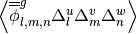 | flux | mesh, energy |
|
total | mesh, energy |
| 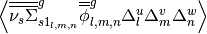 | nu-scatter-1 | mesh, energy |
 |
nu-scatter | mesh, energy, energyout |
 |
nu-fission | mesh, energy, energyout |
| 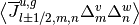 | current | mesh, energy |

Sparsity of Neutron Loss Operator

Sparsity of Neutron Production Operator
To solve the eigenvalue problem with these matrices, different source iteration and linear solvers can be used. The most common source iteration solver used is standard power iteration as described in [Gill]. To accelerate these source iterations, a Wielandt shift scheme can be used as discussed in [Park]. PETSc solvers were first implemented to perform the linear solution in parallel that occurs once per source iteration. When using PETSc, different types of parallel linear solvers and preconditioners can be used. By default, OpenMC uses an incomplete LU preconditioner and a GMRES Krylov solver. After some initial studies of parallelization with PETSc, it was observed that because CMFD matrices are very sparse, solution times do not scale well. An additional Gauss-Seidel linear solver with Chebyshev acceleration was added that is similar to the one used for CMFD in CASMO [Rhodes] and [Smith]. This solver was implemented with a custom section for two energy groups. Because energy group is the inner most index, a block diagonal is formed when using more than one group. For two groups, it is easy to invert this diagonal analytically inside the Gauss-Seidel iterative solver. For more than two groups, this analytic inversion can still be performed, but with more computational effort. A standard Gauss-Seidel solver is used for more than two groups.
Besides a power iteration, a Jacobian-free Newton-Krylov method was also implemented to obtain eigenvalue and multigroup fluxes as described in [Gill] and [Knoll]. This method is not the primary one used, but has gotten recent attention due to its coupling advantages to other physics such as thermal hydraulics. Once multigroup fluxes are obtained, a normalized fission source is calculated in the code using eq. (16) directly.
The next step in the process is to compute weight adjustment factors. These are calculated by taking the ratio of the expected number of neutrons from the CMFD source distribution to the current number of neutrons in each mesh. It is straightforward to compute the CMFD number of neutrons because it is the product between the total starting initial weight of neutrons and the CMFD normalized fission source distribution. To compute the number of neutrons from the current MC source, OpenMC sums the statistical weights of neutrons from the source bank on a given spatial and energy mesh. Once weight adjustment factors were calculated, each neutron’s statistical weight in the source bank was modified according to its location and energy. Examples of CMFD simulations using OpenMC can be found in [Herman_Thesis].
9.4. References¶
| [BEAVRS] | Nick Horelik, Bryan Herman. Benchmark for Evaluation And Verification of Reactor Simulations. Massachusetts Institute of Technology, http://crpg.mit.edu/pub/beavrs , 2013. |
| [Gill] | (1, 2) Daniel F. Gill. Newton-Krylov methods for the solution of the k-eigenvalue problem in multigroup neutronics calculations. Ph.D. thesis, Pennsylvania State University, 2010. |
| [Hebert] | Alain Hebert. Applied reactor physics. Presses Internationales Polytechnique, Montreal, 2009. |
| [Herman] | Bryan R. Herman, Benoit Forget, Kord Smith, and Brian N. Aviles. Improved diffusion coefficients generated from Monte Carlo codes. In Proceedings of M&C 2013, Sun Valley, ID, USA, May 5 - 9, 2013. |
| [Herman_Thesis] | Bryan R. Herman. Monte Carlo and Thermal Hydraulic Coupling using Low-Order Nonlinear Diffusion Acceleration. Sc.D. thesis, Massachusetts Institute of Technology, 2014. |
| [Knoll] | D.A. Knoll, H. Park, and C. Newman. Acceleration of k-eigenvalue/criticality calculations using the Jacobian-free Newton-Krylov method. Nuclear Science and Engineering, 167:133–140, 2011. |
| [Park] | H. Park, D.A. Knoll, and C.K. Newman. Nonlinear acceleration of transport criticality problems. Nuclear Science and Engineering, 172:52–65, 2012. |
| [Rhodes] | Joel Rhodes and Malte Edenius. CASMO-4 — A Fuel Assembly Burnup Program. User’s Manual. Studsvik of America, ssp-09/443-u rev 0, proprietary edition, 2001. |
| [Smith] | Kord S Smith and Joel D Rhodes III. Full-core, 2-D, LWR core calculations with CASMO-4E. In Proceedings of PHYSOR 2002, Seoul, Korea, October 7 - 10, 2002. |